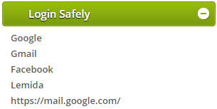
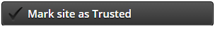
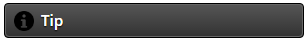
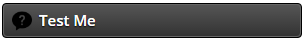
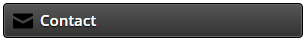

When you click on Shark-King's icon (

), the Shark-King menu will pop up, with the following options:

Clicking the "Login Safely" button will show your lists of Trusted Sites. Clicking on one of these links will take you to the requested website, unless you are currently visiting this site.
This mechanism is very useful against phishing attacks, because if you are currently on a fake site and are unsure of its authenticity, you can simply click on the link to the desired website on this list, and it will either take you there, or confirm the authenticity of the current site.

Clicking the "Mark site as Trusted" button will add the current website to the list of Trusted Sites.
You will be required to use the safe login process in order to log into the websites on this list, as you learned during the training phase.
This means that you will login safely by first selecting your unique image out of the 4 displayed images. Only after selecting the correct image you will be able to log into the site.
Remember, this is the image that you have chosen:

Please note: If you are planning to log into a site that you think is safe, but you haven't performed the safe login process, then the site is a fake phishing site. Please report the site to us by clicking the "Mark site as Suspect" button on the Shark-King menu.
For your convenience, the following sites are already in your list of Trusted Sites:
- Facebook
- Gmail
- Lemida (for Bar-Ilan students)
When you are visiting a website that appears on the list of Trusted Sites, Shark-King's icon will turn green (

).

The "Settings" button allows you to view your list of Trusted Sites and your list of Suspect Sites. You can also add or remove sites from these lists yourself on the settings screen.

The "Mark site as Suspect" button enables you to report to us that the current website that you are visiting seems to be a suspicious phishing site. Clicking this button will add the site to the list of Suspect Sites. If you visit this site again, you'll see a message stating that the site is blocked. If you want to visit the site anyway, even though you reported and blocked it, you will be able to do so by clicking the appropriate button that will appear alongside the message.

The "Report Suspect Ad" button enables you to report to us that the current website that you are visiting seems to contain a suspicious ad.

Clicking the "Tip" button will open a window that will display different tips on how to protect yourself against phishing attacks. Reading these tips will increase your knowledge about phishing and Internet attacks, so it is highly recommended!

The "Test Me" button will give you the opportunity to test your knowledge about phishing attacks in practice. Clicking this button will cause a phishing attack to launch within 24 hours. Highly recommended!

Click the "Contact" button to contact us about anything you desire (suggestions, technical issues and more).
Click the "Share with friends!" button to recommend the Shark-King Chrome extension to your friends, so that they too can enjoy the opportunity to learn about, and defend against, phishng attacks.